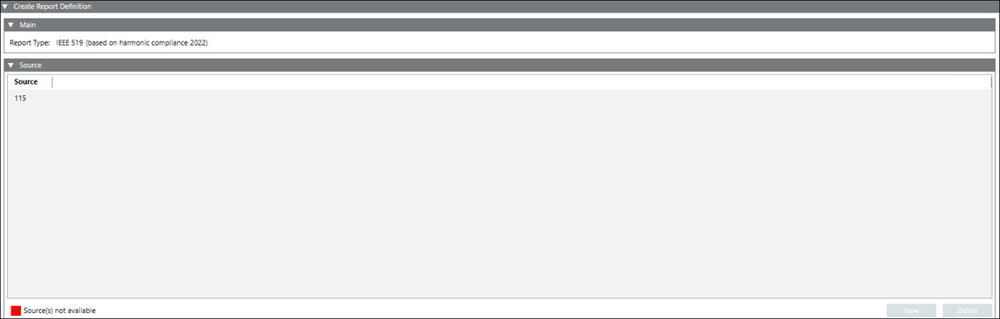

Configure the IEEE 519 Report
- To configure IEEE 519 Report, ensure you have added IEC 61850, and PQ Advisor extension modules to project.
- You have a valid IEC 61850, and Power Quality license, and activated it.
- You have integrated at least one IEC 61850 device, refer Integrating the IEC 61850 Devices.
- You have the latest Firmware version: V2.70 or above in SICAM Q100 device and V2.82.5 or above in SICAM Q200 device.
- You have enabled the JSON option in the IEEE 519 report configuration device web page for the SICAM Q100/Q200 device.
- You have selected the IEEE 519 report type for configuration.
- The Report Definition configuration page displays.
- In the Source expander, drag-and-drop device or click New and select device from the drop-down to add a device for which the report needs to be generated.
NOTE 1: Only Power Quality devices with IEC61850 protocol are available for EN 50160 report.
NOTE 2: You can configure only one Power Quality devices in one IEEE 519 report. - Click Save
 .
. - The Save Object As dialog box displays.
- Enter a name and description and click OK.
- The IEEE 519 report definition is configured.


It is recommended to schedule the report approximately 3 to 4 hours after midnight (12:00 AM) on Monday for background processing in Powermanager. During this period, the system may perform internal computations. If you schedule multiple reports, the total processing time increases accordingly.